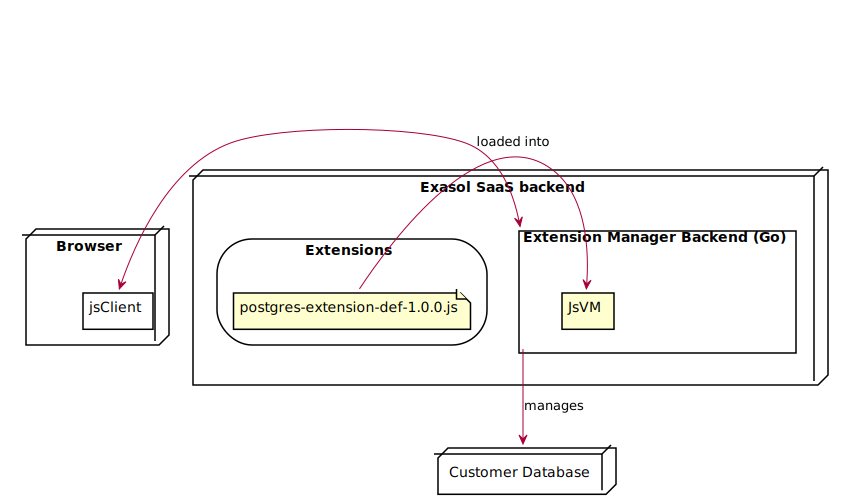
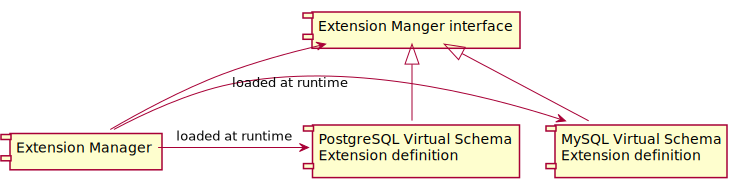
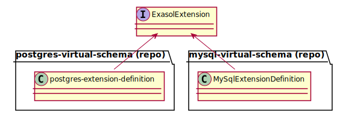
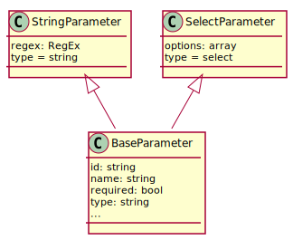
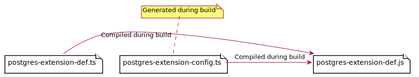
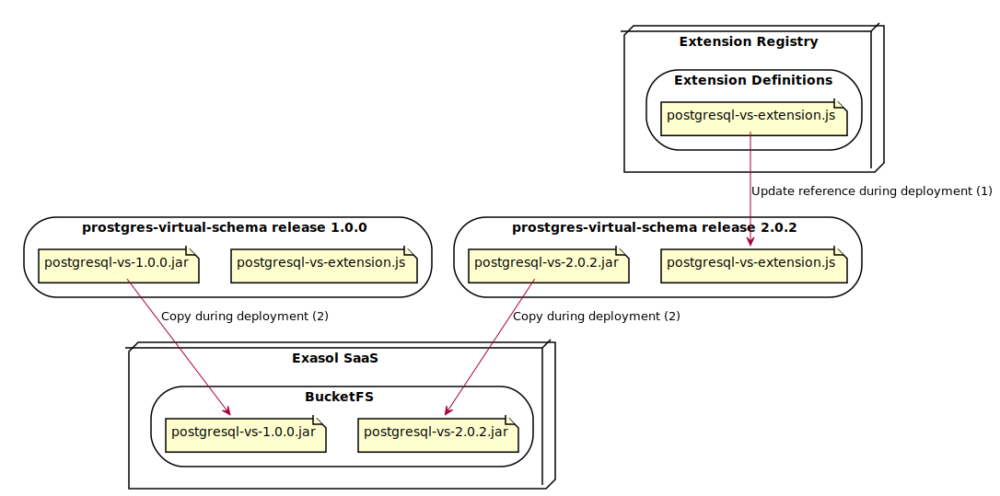
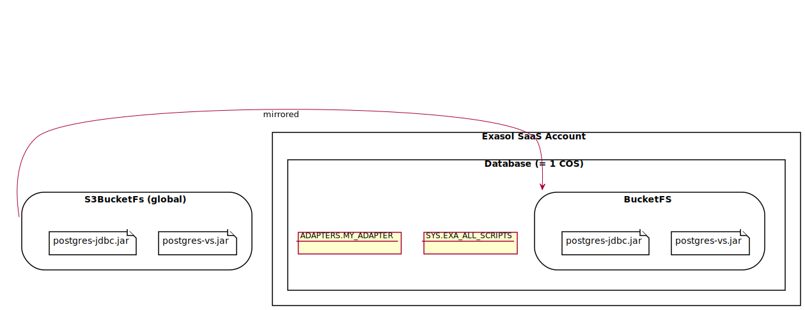
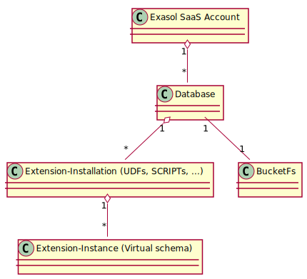
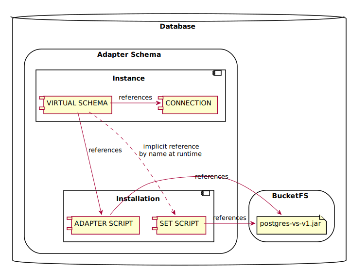

This document’s section structure is derived from the “arc42” architectural template by Dr. Gernot Starke, Dr. Peter Hruschka.
This section introduces technical system constraints.
Please refer to the System Requirement Specification for user-level requirements.
The extension installer is split into a backend (running in the Exasol SaaS backend, see design decisions) and a client (running in the SaaS UI).

dsn~rest-interface~1
EM provides a REST interface to clients.
Covers: * req~rest-interface~1
Needs: impl, itest
dsn~go-library~1
EM is implemented as a Go library instead of an executable Go program.
Rationale:
This allows embedding EM in other applications like SaaS, so it can be reused in different contexts
Comment:
Nevertheless EM additionally contains an executable Go program which is useful for testing EM and extensions.
Covers: * req~embeddable-rest-interface~1
* const~works-with-saas~1
Needs: impl
dsn~openapi-spec~1
EM generates an OpenAPI specification at runtime using the Nightapes/go-rest library.
The standalone executable of EM provides the OpenAPI specification as a web page and in JSON format. Applications that embed EM as a library need to create their own endpoint for that.
Covers: * req~openapi-spec~1
Needs: impl, itest
dsn~extension-registry~1
EM uses a web service called Extension Registry (similar to service discovery) to find available extensions and their JavaScript definitions.
Rationale:
This will allow updating extension definitions without modifying the
deployed EM. In the future this will also allow multiple instances of EM
to use the same list of available extensions. During development and for
integration tests it is easier to use a local directory with JavaScript
files for finding available extensions. That’s why EM supports both
variants. At startup it will check if the configured extension registry
URL starts with http and will use the appropriate
implementation.
Covers: * req~finding-available-extensions~1
Needs: impl, utest, itest
dsn~extension-registry.cache~1
EM caches the content returned by the registry.
Rationale: * Caching the registry content avoids fetching the same data multiple times and speeds up the process. * Cache expiration is not necessary because a new instance of the EM controller is created for each request.
Covers: * req~finding-available-extensions~1
Needs: impl, itest
The Extension Manager has an extension mechanism.
The extensions are integration projects maintained by Exasol. For now, it’s not possible to install third party extensions, since it would be a security risk.
The extension manager itself has no dependencies to the Virtual Schema projects. They are loaded at runtime.

dsn~extension-components~1
An extension might consist of JDBC driver, artifacts, configuration and database objects. Depending on it’s nature a specific extension might not require all artifacts.
In the initial version when managing extensions EM requires the following components to be available in BucketFS and does not actively manage them: * JDBC driver * Artifacts in BucketFS, e.g. jar files * 3rd party libraries
Instead, for managing extensions EM only considers the following
database objects: * ADAPTER SCRIPT *
SET SCRIPT * CONNECTION *
VIRTUAL SCHEMA including mapping
Note: In the following cases a separate artifact in BucketFS is not required, as extension definition can inline these contents into the SQL statements of either adapter script or set script: * JSON content of virtual schema EDML mapping, see EDML user guide * Lua scripts
When creating the required database objects EM will read all required arguments, configurations and credentials from the extension definition. The extension definition can also define parameters. EM will evaluate the parameter definitions and then ask the user to enter a value for each of the parameters. See also an example of the installation process.
Covers:
Needs: impl, utest
dsn~configure-bucketfs-path~1
EM allows configuring the BucketFS path where extensions artifacts like JAR files are located.
Rationale:
As described in dsn~extension-components~1
an extension may require files in BucketFS. The path to the BucketFS
location depends on the Exasol database deployment.
Needs: impl, utest, itest
dsn~extension-definition~1
Each extension might be implemented in an arbitrary programming language and typically is based on a so-called user defined function. In order to allow EM to manage multiple heterogenous extensions in a unique way, each extension is represented by small wrapper implementing a uniform interface. This wrapper is called an “extension definition”.
Covers:
Needs: impl, utest, itest
dsn~extension-api~1
Each extension definition
implements the TypeScript interface defined in extension-manager-interface.
This allows EM to uniformly manage all extensions that implement this
interface.

Covers:
Needs: impl, utest
dsn~extension-definitions-storage~1
The extension definitions are placed in a storage that is accessible from the extension-manager backend. Access from inside the database is not required.
Covers: * req~install-extension-artifacts~1
* req~define-configuration-parameters~1
* req~uninstall-extension~1
Needs: impl, itest
dsn~extension-compatibility~1
EM verifies that a loaded extension uses an extension API versions with the same major version as EM.
Covers: * req~extension-compatibility~1
Needs: impl, utest, itest
dsn~versioning~1
Note that only the latest version of the extension definition is deployed.
That does not mean that it’s impossible to install older versions of an extension. Just the extension definition (the plugin for the extension manager) is always the latest version.
That means that the extension definition must be able to uninstall and update all old versions of its extension. That makes testing harder but is the only way to have the upgrade path tested.
The alternative to also version the extension definition would lead to unmaintained and untested code, since the old version would not be tested with newer DB versions.
This requirement must be covered by extensions.
Covers: * req~install-extension-artifacts~1
* req~uninstall-extension~1
dsn~configuration-parameters~1
The extension definition also includes parameters for configuring the extension.
Covers: * req~define-configuration-parameters~1
Needs: impl, utest
dsn~parameter-definitions~1
EM extension interface uses a flexible JSON structure to describe the parameters including conditional parameters.
Rationale: Individual extensions might have different parameters. For example a virtual schema for another database might support multiple connection protocols or libraries (e.g. ODBC and JDBC) that require different configuration options. Depending on the selected protocol EM can then show only the parameters for the selected protocol but hide unrelated parameters.
Example:
extension = {
// ...
condition: {
parameter: "connectorType",
operator: Operators.EQ,
value: "jdbc"
}
// ...
}While this requires interpretation of the JSON structure, it allows to transfer the parameter definition to the frontend as simple JSON in contrast to the alternative options considered.
Covers: * req~define-configuration-parameters~1
* req~parameter-types~1
Needs: impl, utest, itest
dsn~parameter-types~1
Each extension can define parameter definitions. The UI then shows a
form with these parameters to the users and passes the values to the
createInstance endpoint.
The following class hierarchy is used to model parameter definitions:

Covers: * req~parameter-types~1
Needs: impl, utest
dsn~conditional-parameters~1 Status: draft
Conditions for conditional parameters are represented by JSON structures, see design decision against alternative options to represent conditional parameters.
Covers: * req~parameter-types~1
dsn~parameter-versioning~1
Each parameter definition is attached to a specific version of the extension.
Rationale: Parameters can change over time, see Upgrades.
Covers: * req~define-configuration-parameters~1
* req~upgrade-extension~1
Needs: impl, utest
dsn~reuse-parameter-validation-rules~1
Parameter validation for both stages (frontend and backend) is configured in extension definition, see related Design Decision.
Covers: * req~validate-parameter-values~1
Needs: impl, utest
dsn~parameter-validation-rules-simple~1
The extension definition can specify rules for parameter validation:
param = {
id: "port",
name: "Port",
type: "string",
regex: /\d+/ // <-- Validation via regex
}Covers: * req~validate-parameter-values~1
Needs: impl, utest
dsn~parameter-validation-rules-complex~1 Status:
draft
More complex validations involving multiple parameters can be defined via a JavaScript callback function that is executed only in the backend, not the frontend. That gives the extension definition the maximum flexibility while simplifying the validation in the frontend.
extension = {
//...
validate(parameterValues) {
if (parameterValues["connectorType"] === "jdbc" && !isValidJdbcParameter(parameterValues["additionalJdbcParameter"])) {
return "Invalid value for additionalJdbcParameter.";
}
}
}See design decision against a callback for the client side validation.
Covers: * req~validate-parameter-values~1
The Extension Integration Testing Framework for Java (EITFJ) allows extension developers to create integration tests for an extension involving its definition](#extension-definitions) and implementation.
The EITFJ is written in Java as most extensions like virtual schemas are also written in Java. This way it’s easy to add integration tests for an extension into the existing Maven build.
dsn~eitfj-start-extension-manager~1
The EITFJ provides a method for installing and starting an Extension Manager REST interface.
Covers: * req~extension-testing-framework~1
Needs: impl, itest, doc
dsn~eitfj-access-extension-manager-rest-interface~1
The EITFJ provides a Java API for accessing the EM REST interface.
Rationale: This simplifies integration tests and avoids code duplication.
Covers: * req~extension-testing-framework~1
Needs: impl, utest, itest, doc
dsn~eitfj-prepare-previous-extension-version~1
The EITFJ provides a Java API for preparing previous versions of an extension. This allows writing integration tests for upgrading from a previous version to the current version of an extension.
Covers: * req~extension-testing-framework~1
* req~upgrade-extension~1
Needs: impl, utest
dsn~list-extensions~1
EM builds the list of extensions based on the extension definitions. EM shows only extensions for which all components are available, e.g. required artifacts in BucketFS. The list also shows details about each extension: * status: available or installed * version
Covers: * feat~list-extensions~1
Needs: impl, utest, itest
dsn~extension-definitions-deployment~1
During the build of each virtual-schema project the extension definitions (written in TypeScript) are compiled to a single JavaScript file:

The built installers are attached to the release:
Release assets:
postgresql-vs-2.0.2.jar
postgresql-vs-2.0.2.jar.sha256
postgresql-vs-extension.js
postgresql-vs-extension.js.sha256The following diagrams shows the deployment of the adapter JAR and the extension definition:

The extension registry contains references to all available extension definitions.
When a new version of an extension is released, the following steps are required for deployment:
.js file..jar file to the Exasol SaaS
BucketFS.Notes: * Both processes (1) and (2) are not yet automated. * See details about BucketsFS Buckets in Exasol SaaS in the next section.
Covers: * req~install-extension-database-objects~1
* req~define-configuration-parameters~1
* req~uninstall-extension~1
An Exasol SaaS instance has access to the following BucketFS buckets:
/buckets/bfssaas/default//buckets/bfssaas/advanced//buckets/uploads/default/The bfssaas BucketFS is managed globally for all Exasol
SaaS instances by the SaaS team. All SaaS instances have read-only
access to buckets /buckets/bfssaas/default/ and
/buckets/bfssaas/advanced/ depending on the subscription.
These buckets contain pre-loaded files for selected extensions.
Bucket /buckets/uploads/default/ is manged by end-users
individually per SaaS instances. Users can upload files on their
own.
Currently Extension Manager does not have write access to BucketFS. That’s why all required files (e.g. adapter JAR files, JDBC drivers etc.) must be managed with a separate manual or automated process.
This means that new releases of adapter JARs must be uploaded
manually to one of the bfssaas buckets before end-users can
install the extension in EM.
In the future we might have an additional bucket for each SaaS instance where EM can upload adapter JARs on demand during the installation.
dsn~validate-parameters~1
EM validates parameters in two stages:
Covers: * req~validate-parameter-values~1
Needs: impl, utest, itest
dsn~installation-scope~1
The installation of an extension is scoped to an Exasol database (new term in SaaS context).


Covers: * req~install-extension-database-objects~1
dsn~installation~metadata~1
Extensions don’t store their own metadata. Instead they read information about existing adapter scripts, connection definitions and virtual schemas from the Exasol database itself. In most cases this is implemented by querying Exasol’s metadata tables.
However, for example for reading back the credentials stored in a connection, EM uses a temporary UDF that reads back the secret value.
Covers: * req~install-extension-database-objects~1
Needs: impl, utest, itest
dsn~installation~process~1
The following list describes the installation process using the extension for a virtual schema as example.
extension-manager-interface
implemented by the extension is supported.ADAPTER SCRIPT exists for the required VS
Jar.
SET SCRIPT with name
IMPORT_FROM_<vs-name> exists using the expected file.
CONNECTION with the
parameters entered by the user.VIRTUAL SCHEMA with the
parameters entered by the user.Deployment view of an installed virtual schema:

Covers: * req~install-extension-database-objects~1
Needs: impl, utest, itest
dsn~upgrade-extension~1
EM can upgrade an installed extensions and its instances to the latest version.
Covers: * req~upgrade-extension~1
* req~install-extension-database-objects~1
Needs: impl, utest, itest
The extension context allows extension definitions to interact with the extension manager and the database (e.g. by executing queries).
dsn~extension-context-sql-client~1
The SQL client in the extension context allows the extension definition to execute statements and run queries against the database and process query results.
Rationale:
SCRIPTs, CONNECTIONs and
VIRTUAL SCHEMAs.Covers: * req~install-extension-database-objects~1
Needs: impl, utest, itest
dsn~extension-context-bucketfs~1
The BucketFS client in the extension context allows the extension definition to interact with BucketFS.
Covers: * req~install-extension-database-objects~1
Needs: impl, utest, itest
dsn~resolving-files-in-bucketfs~1
EM resolves filenames to absolute paths in BucketFS.
Rationale:
Extensions require files in BucketFS. The exact location in BucketFS
of the files is not known when creating an extension, only the file name
(e.g. document-files-virtual-schema-dist-7.3.3-s3-2.6.2.jar).
In order to create adapter scripts, the extension must know the absolute
path of the file in BucketFS
(e.g. /buckets/bfsdefault/default/document-files-virtual-schema-dist-7.3.3-s3-2.6.2.jar).
So EM must allow the extension to resolve file names to an absolute path
in BucketFS.
Needs: impl, utest, itest
dsn~extension-context-metadata~1
The Metadata client in the extension context allows the extension
definition to read Metadata (e.g. tables
SYS.EXA_ALL_SCRIPTS or
SYS.EXA_ALL_VIRTUAL_SCHEMAS) from the database.
Rationale:
SYS.EXA_ALL_VIRTUAL_SCHEMAS has changed between Exasol v7
and v8. So the code for reading this table requires distinction between
the two versions.
Covers: * req~install-extension-database-objects~1
Needs: impl, utest, itest
Most virtual schemas (including for example the postgres virtual schema) require an additional third-party JDBC driver. That driver for now must be copied manually into the BucketFS of all SaaS offerings, see Components of an Extension.
Most virtual schemas (including for example the postgres virtual schema) are implemented as a jar file in BucketFS. The jar file for now must be copied manually into the BucketFS of all SaaS offerings, see Components of an Extension.
One option would have been to implement everything in the JavaScript client. However, the developers discarded that option, since it does not allow us to upgrade the installed adapters automatically. An automated job can’t run in a browser.
The compiled JavaScript code is evaluated in the backend using a nested JavaScript interpreter.
By that it is isolated and can’t access resources like disk or network.
The developers decided to implement parameter validation as a
TypeScript library extension-parameter-validator.
Rationale: By this a single implementation can be used for both validation stages: frontend and backend. The Go backend will use a JavaScript VM.
We decided against a callback for the client side validation of parameters. The main
reason was that it would require to load code into the client at
runtime. That would require to run eval() on code retrieved
from a request. Even so the security risk of that seems acceptable, we
decided against it since it would look suspicious.
The developers considered the following options:
Condition as JavaScript code in a string, e.g.
condition: "parameters.connectorType === \"jdbc\""
Condition as JavaScript callback, e.g.
extension = {
condition: (parameterValues) => parameterValues.connectorType === "jdbc"
}While both options don’t need any interpretation logic they would
require executing the JavaScript snippet in the frontend with
eval() which poses a security risk.
Interpretation of the JSON structure was implemented in a separate
library extension-parameter-validator written in TypeScript
which is used by both the frontend and the backend. By this additional
implementation effort need to be invested only once.
The developers decided to implement extension definitions in TypeScript.
The developers decided for a programming language like JS since some extensions have more complex installation mechanisms. Expressing this by just providing SQL scripts with placeholders quickly reaches its limit.
Especially the function for reading back parameter values can get a bit more complex.
We could also use Lua. The developers decided for JS since:
JavaScript does not provide type checking of the interface, hence not all potential incompatibilities with the Extension API can be found at compile time.
TypeScript is compiled to JavaScript, so no additional tooling is required at runtime.
TypeScript adds a bit of complexity at build time for transpiling TypeScript to JavaScript, but the developers decided to accept this additional effort.
When multiple versions of the same extension definition (i.e. JavaScript files) are present in the extension registry, EM will query all of them when listing installations. For each version EM will find the same installations (e.g. adapter script). In result EM might return multiple installations where only one is present.
A possible mitigation could be that EM filters the registry and for each extension definition keeps only the latest version.
We accept the risk for now and ensure that the registry only contains a single version of each extension definition.